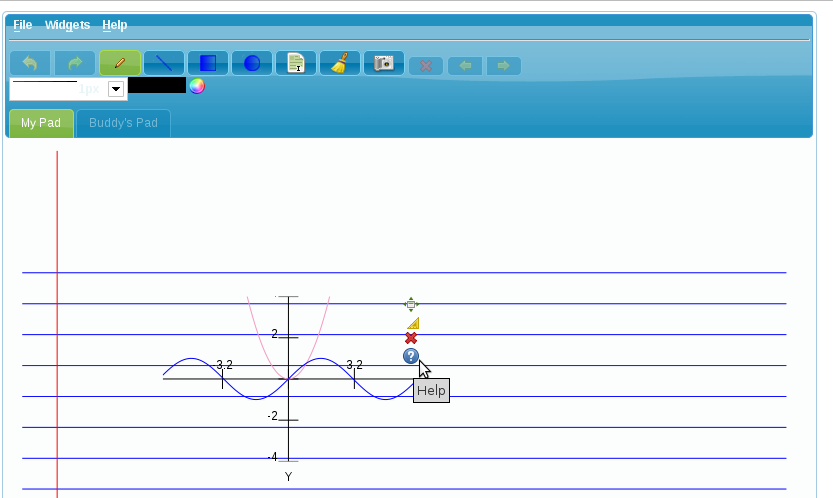

1. Creating New Documents.
Creating new documents in colabopad is fairly easy. When you launch the tool, a default document opens up, this default document uses the "notebook template" as can be seen below:
1.1 Using Page Templates
You can create a new document/page by selecting File->New Page from the main menu as shown below:
As can be seen above, you can select from the set of standard page templates (notebook, graph paper, plain white sheet, blackboard), or you can select a custom page template, such as one for your organization. We'll be adding more custom templates.
1.2 Page Navigation
You can easily navigate between your pages by using the following navigation buttons on the Toolbar:
Clicking on the red x button deletes the current page.
2. Using the Pen tool
The Pen tool is the primary means of using colabopad. The Pen tool has several modes depending on what you want to do. The default mode is freehand, in this mode you can
write in freehand format. You can switch to any of the available shape (Line, Rectangle, Circle) modes by selecting the appropriate button from the following Toolbar:
-
2.1 Using Color
Using color with the Pen tool is very simple, simply click on the color button
 from the Toolbar and select a color. The selected color is
Shown in the text field next to the color button, you can also type in a different color using standard HTML color notation.
from the Toolbar and select a color. The selected color is
Shown in the text field next to the color button, you can also type in a different color using standard HTML color notation.
2.1.1 Filling shapes with color
By default polygons are drawn as outlines, you can fill them with the current color by simply double clicking within the outline. So for instance you can fill the first circle with the current color by double clicking inside the circle. The second circle shows the results.
-
2.2 Setting outline width
You can set the thickness of your pen outline by selecting your choice from the dropdown on your Toolbar:
3. Using Widgets
One of the cool features of Colabopad is the ability to use widgets, widgets are small programs that can be developed by anyone and added to Colabopad. You access widgets by selecting
Widgets froms the main menu. Widgets are grouped according to the their
functionality as demonstrated below:
3.1 Widget specific Usage help
Every widget is different so the way you use them will be different. Wigets developer will provide widget-specific usage instructions. You can
access the help information of a widget by clicking Help on the above menu or by mousing over the widget and clicking on the help button as shown below:

4. Loading & Saving your work.
4.1 Saving/Exporting
You have 3 ways you can save your work in Colabopad. You can export as a PNG Image file, or save as an SVG file or as a Colabopad File (Recommended). When you save
as a Colabopad File, you can reload your work at a later time and continue working as if you never stopped. You save by going to File->Save As...
from the main menu as shown below:
4.2 Opening a Colabopad file
Colabopad only allows the loading of Colabopad Files, you can access that function by going to File->Open File..
from the main menu as shown below:
5. Collaborating with others
The key feature of Colabopad is that it allows you to work with others over the web in realtime and seamlessly. Collaborating with Colabopad is very simple. The steps involved in setting up a collaboration are very simple:
- Invite Someone
- Subscribe to, or checkout someone's pad
- Work...
5.1 Invite Someone
Inviting someone is as simple as clicking the "Send Invite" button on the left panel as shown below:
Clicking this button brings up the following box that allows you to enter the name and e-mail of the person you wish to invite:
An e-mail would be sent to the invitee with the login link, and the new invitee would be added to your list of participants as shown below:
You can resend an invite to someone by right clicking on their name and selecting Send Invite.
Note: you can only invite someone if you are the creator of the room.
When someone joins the session, the icon next to their name goes from a gray color to green as shown below:
5.2 Subscribe to, or checkout someone's pad
Subscribing to someone's pad means you want to view their work but without the ability to edit it. Checking out a pad means
you want to view and in addition be able to edit that pad. You can request to subscribe to or checkout someone's pad by right clicking on their name and selecting Subscribe as illustrated below:
When the person receives your request they'll be prompted to grant you access to their pad, if they do, then a second tab will become active
with the person's name as shown below:
This new tab represents the subscribee's current page, you'll be able to see in realtime all the
work they're doing including all their freehand writing. If you had requested to Checkout then you'll also be able to make changes
and they too will be able to see your changes in realtime as if you were sitting at their desk.
Dis-inviting Someone
If you are the creator of the session, then you can remove invitees by right clicking on their name and selecting "Remove".
6. Further Help
If you have other questions or concerns that are not addressed in this document, please visit the Colabopad help group on Google. You can post questions and see answers to other questions.